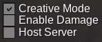
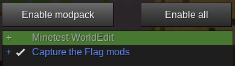
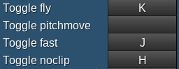
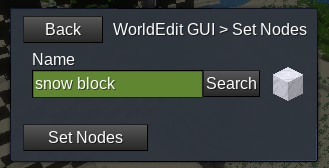
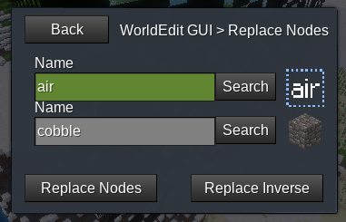
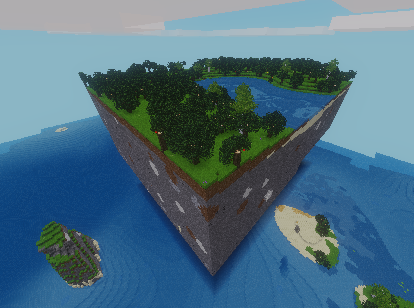
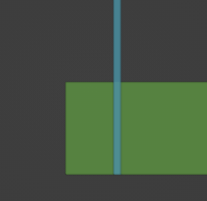
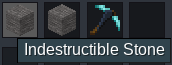
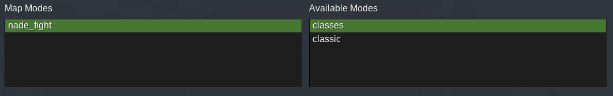

A map shouldn't be too big or too small. The size of a map can vary depending on the terrain and structures that the map will have. With a typical map size, players should be able to reach the middle of the map with a full sprint bar before running out of sprint. A maximum of 230 x 230 blocks in surface area is recommended.
If you are making a map for the official CTF server, it is important to note that your map should be unique and not similar to the maps that already exist in the game.
The map design shouldn't give any team advantages (such as having a better position or more resources). All teams should have an equal chance of winning.
Using certain mods on the world the map-making takes place might cause unpredicted problems to the finished map. Switching Minetest or CTF game versions in the midst of the map-making process might also cause problems.
3. Creating the world
Open Minetest and select the Capture the Flag game.
Create a new world. You can use any mapgen. If you would like to use generated terrain, you can choose the v7 or flat mapgen. If you plan on building the terrain/structures yourself, you can choose the singlenode mapgen.
After you click Create, uncheck Enable Damage and check Creative Mode. Creative mode will enable mapedit mode.

If you would like to use WorldEdit, click Select Mods, select WorldEdit, and click Enable modpack.

Click Save and play the world.
4. Setting up
Grant yourself the "ctf_map_editor" priv by running /grantme ctf_map_editor. You can also use /grantme all to grant yourself "ctf_map_editor" and all the other privs that will be useful while making a map, such as fly, noclip, fast, etc.
You can hit Esc on your keyboard and click Change Keys to see your controls (such as how to fly, noclip, etc.).

Tip: Run /time 12000 and /set -n time_speed 0 if you want to disable nighttime while building the map.
5. WorldEdit basics
To use WorldEdit, first, you must select an area where your actions occur.
You can use the WorldEdit Wand tool to select your area. To select your area, you select the two opposite corners of the area. Left-click a node with the tool to make the node the first corner, and right-click to set the second.
An alternative method is to stand at the point you would like to select and run //1 in chat to set the first corner and //2 to set the second.
The area within will be selected.
Open your inventory. Under the Crafting tab, an earth icon is hidden behind the crafting options. Click it to open the WorldEdit GUI.
These are the tools that you can use to alter the nodes within your selected area. You can experiment with the options.
To set the area you've selected earlier with a certain type of node, click Set Nodes, type in the name of the node you would like to set in the field, click Search or press enter, and click Set Nodes.

If you've selected a large area, WorldEdit might warn you in chat. Type //y in chat to continue.
To replace a certain node type with another one in your selected area, select Replace Nodes. In the first field, type in the node you would like to replace; in the second field, type in the node you would like to replace with.
To only place nodes where there are no nodes, you can replace air with the node you want to use.

6. Removing the surrounding terrain
This is optional and only applies if you're using generated terrain. If you're using the singlenode mapgen, you can ignore this and continue reading from here.
It might be hard to place the outer barriers when the terrain outside your map area blocks your view.
To get rid of the extra terrain, first, select the area your map will be in with WorldEdit.
Once you select the area, run //mtschemcreate <any name>. For example:
//mtschemcreate map_terrain
You can copy the exported schems to a singlenode world and place the terrain there. But to keep it simple, you can just fly up in the air and place the terrain in the sky.
Enable fly, fly up, and find a suitable place. Place a corner with WorldEdit by running //1 in chat. Then, run //mtschemplace <your schem name>. For example:
//mtschemplace map_terrain
With that, your terrain should be placed there successfully. If you're unhappy with the result, you can go back down, pick another terrain, and do it again.

7. Placing the barriers
An easy way to place the outer barriers is to run the following command and select your whole map by supplying the two coordinates as instructed in chat:
/ctf_barrier place_outer
If you would like more customization with the outer barriers, you can use WorldEdit to place them instead:
To make the bottom of the map indestructible so that players can't escape, select the bottom layer of your map and replace it with any indestructible node through the WorldEdit GUI, or the command //s <node itemstring>. For example:
//s ctf_map:ind_stone
Your outer barriers can be placed outside your map area, override the outer slice of your map, or leave parts of the map terrain/structures outside the barrier.

To place the outer barrier, select the area where the barrier will be with WorldEdit (this area should only be one node thick) and set it to Indestructible Barrier Glass (ctf_map:ind_glass) or any type of indestructible node. Many nodes have indestructible variants, which you can use. You can place it using the WorldEdit GUI, or through the command //s <node itemstring>. For example:
//s ctf_map:ind_glass
This method will penetrate the terrain/structures if you have some within your selected area.
To replace the terrain with a type of indestructible node and everything that is not terrain with the barrier glass like the image below, you can replace-inverse air with your indestructible node and then replace air with Indestructible Barrier Glass.
To do that, select the area where the barrier will be with WorldEdit and replace-inverse air with your indestructible node through the WorldEdit GUI or using //ri air <node itemstring>. For example:
//ri air ctf_map:ind_stone
Then, without selecting a new area, replace air with Indestructible Barrier Glass using the WorldEdit GUI, or through the command:
//r air ctf_map:ind_glass
After finishing your first barrier wall, proceed to build the other 3 sides of the barrier.
You can also make a roof using any type of indestructible node such as Indestructible Barrier Glass, but if you set your map area correctly later on, players shouldn't be able to escape through the roof. So, you do not necessarily need to add a roof.
8. Building the map
If you are using the singlenode mapgen, because of the world being filled with "Artificial Ignore" (ctf_map:ignore), players will not be able to move around without noclip.
"Artificial Ignore" is a type of invisible, un-diggable, and un-pointable (you cannot select it) block. You have to set the area you want players to move in with air using WorldEdit. So, to make a map in the singlenode mapgen, you will need to enable noclip, and set the area you require for map making to air, and run:
//s air
When building your map, you can add any structure you want. Many blocks have indestructible variants, which you can use for builds you don't want players to destroy (use the admin pickaxe to break indestructible blocks).

You should also add the following:
Indestructible blocks under the position of the flag (the flag will be added later). The minimum surface area for this indestructible platform is 5x5 blocks (the flag should be in the middle).
Team chests for each team. You can find them as a node in the inventory.
Optional: ores (such as iron, diamond, or mese ores). The number of ores for each team should be about the same to ensure that no team has an advantage (please note that mapgens such as v7 and flat come with ores).
9. Building the build-time barrier
Your build-time barrier should be in the middle of the map. It is fine if it can't be precisely in the middle.
To place the build-time barriers, run the following command in chat and select the area where your build-time barrier wall will be by supplying the two coordinates as instructed in chat (you can include terrain/structures in the selection too; don't worry they won't be replaced):
/ctf_barrier place_buildtime
The above will replace certain nodes with the corresponding build-time barrier, creating a build-time wall. To remove a build-time wall or any part of it, run the following command in chat and supply the coordinates:
/ctf_barrier remove_buildtime
To place the build-time barrier wall with WorldEdit, you can do the following:
The Indestructible Red Barrier Glass will disappear once build-time is over, so your build-time wall should not replace any part of the map terrain/structures. To do this, select the area where the build-time barrier wall will be with WorldEdit (you can include terrain/structures in the selection too; don't worry they won't be replaced), and run:
//r air ctf_map:ind_glass_red
If there are stone nodes within the barrier wall, you can replace them with Indestructible Red Barrier Stone, which will turn into normal stone once the match starts. To do this, maintain the same selected area as before and run:
//r default:stone ctf_map:ind_stone_red
If there is water within the barrier wall, you can replace it with Indestructible Water Barrier Glass, which will turn into water once the match starts. To do this, maintain the same selected area as before and run:
//r default:water_source ctf_map:ind_water
If there is lava within the barrier wall, you can replace it with Indestructible Lava Barrier Stone, which will turn into lava once the match starts. To do this, maintain the same selected area as before and run:
//r default:lava_source ctf_map:ind_lava
If there are still breakable nodes within the barrier wall, you can leave them there, because if you set your team-zones correctly later on, players should be teleported back to base if they cross the barrier wall.
10. Selecting the map area
After you finished building your map, run the following command in chat:
/ctf_map editor
Click Create New Map.
Follow the instructions given to you in chat and select the area your map is in, just like how you would select the area with WorldEdit. You can either punch a node to select or stand where you want to select and run the following command:
/ctf_map here
Make sure you selected your entire map and that you did not select any extra space. If you have decided to leave some terrain/structures outside your outer glass barrier, include them too.
11. Exporting the map
After selecting your map area, run /ctf_map editor in chat again. This will open the Map Editor.
Check Map Enabled unless you don't want to make the map available for play. If you are making the map for the official server, you will check this.
In the license field, add the license of your map. Every map must have a license. The official CTF server will only accept free culture licenses like CC BY-SA 4.0. Please note that some CC licenses, such as CC BY-ND are not free. You can find a list of CC licenses here.
From the ctf_map README:
In the Folder Name field, type in the name you want the map folder to be. For example, if your map name is "My Map", it is recommended for you to name the folder my_map.
Give players a hint about your map in the Map Hint field, such as where the treasures/ores are.
Use Other Info for additional information about the map. You can leave this empty.
In the Map Name field, type in the name of your map. For example, "My Map".
In the Map Author(s) field, type in the name(s) of the author(s) of your map.
Map Treasures is optional. You can leave this field untouched. From the ctf_map README:
The Skybox is an image of a sky that will replace the default Minetest sky when players play your map. You can leave this as none to use the default Minetest sky or select one of the skyboxes. You can also add custom skyboxes. (WIP)
In Map Modes, you can select the modes that will be enabled for your map. By default, all modes are enabled. To disable/enable a mode, double click it. Disabled modes are in the Available Modes box.

Map Constants (from the ctf_map README):
Below the map constants, you will see a list of the different teams with a checkbox next to them. Use the checkbox to enable the teams that exist in your map.
Next, click the Set Flag Pos button below your first enabled team and punch the node where that team's flag will be on. This will place the flag on top of that node.
Then, click the Zone Bounds button below the Set Flag Pos button and select the team's team-zone. A team-zone is the area where the team's players interact within during build-time before the build-time barriers drop. During build-time, players who leave the team-zone will be teleported back to base. Even standing on the edge of the team-zone will teleport the player back to base, so make sure to include the barriers within your team-zone too, or players will get teleported back to base if they touch the barriers during build-time!
The Look position is the direction the players will look when they spawn at base. You can leave this by default (default is: auto).
Repeat the same process for every enabled team.
To add treasure chests to your map, click the Add Chest Zone button to add a chest-zone. A chest-zone is an area where the treasure chests will spawn randomly. You can add multiple chest zones. Click on the Chest Zone - (0,0,0) - (0,0,0) button for each chest zone to select each chest zone's area. You can only add one chest zone and have it cover the whole map, or you can add several different chest zones. You can edit the number of chests that will spawn randomly in each chest-zone.
You can click the X button to remove a chest zone. Make sure each team gets around the same number of chests on their side!
Once you finish configuring the map, click the Finish Editing button at the very bottom to finish.
12. Testing the map
You can find your exported map folder within [Minetest folder]/worlds/[Map World]/schems/.
To test your map, copy that folder into [Minetest folder]/games/capturetheflag/mods/ctf/ctf_map/maps. You can go to your Minetest folder and paste the following into your file manager's search/directory to navigate there quickly:
/games/capturetheflag/mods/ctf/ctf_map/maps
Create a new world in the Capture the Flag game with the singlenode mapgen.
Disable Creative Mode, and play the game.
Grant yourself the ctf_admin priv (required to run upcoming commands) by running the following command:
/grantme ctf_admin
To skip to your map, you can run the command /ctf_next -f <map_name> or run the command /maps. Once you run the /maps command, you will be in the "Map catalog" menu. Find your map in the list, select it, and press the Skip to map button.
To skip build-time, you can run the following command:
/ctf_start
To set yourself to the other team, run:
/grantme ctf_team_admin
Then:
/ctf_teams set singleplayer <team color>
For example:
/ctf_teams set singleplayer blue
13. Screenshot
From the ctf_map README:
To crop your screenshot, you can use this website.
14. Submission
Now that you have finished making your map, you can submit it to the official CTF server. You can learn more about submission here.


")